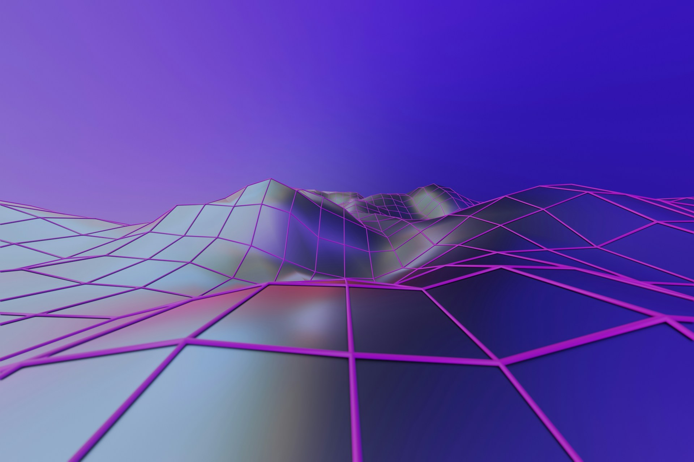
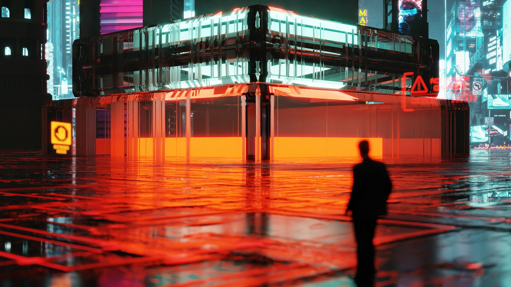

La historia de los videojuegos no se mide solo en polígonos o resolución.
También se mide en libertad, profundidad, conexión y respuesta.
Evolución de la experiencia de juego
Capítulo 1
El nacimiento de la interacción
Antes de los mundos abiertos, existió una revolución más simple: la pantalla empezó a responder al jugador.
No hacía falta realismo. Bastaba una señal clara: presionar un botón y ver una consecuencia inmediata. Ahí nació la base de todo lo que vendría después.
Antes de los mundos, existió la respuesta.
input
respuesta
pantalla
El primer puente entre jugador y sistema.
Capítulo 2
Cuando la pantalla empezó a avanzar
El juego dejó de ser una sola prueba estática y se convirtió en un recorrido.
La pantalla empezó a sugerir que había algo más allá del borde visible. Avanzar ya no era solo superar un obstáculo: era descubrir, recordar y construir una idea de lugar.
La pantalla dejó de ser una sala. Se volvió camino.
exploración
recorrido
descubrimiento
El jugador empieza a avanzar por mundos con memoria.
Capítulo 3
El salto al espacio
La tercera dimensión cambió más que la apariencia.
Moverse dejó de ser una línea y se convirtió en orientación. La cámara, la distancia y la profundidad empezaron a formar parte de la experiencia del jugador.
El jugador dejó de cruzar pantallas. Empezó a entrar en espacios.
profundidad
cámara
presencia

La percepción del espacio se vuelve parte del gameplay.
Capítulo 4
Jugar dejó de ser solitario
Con la conexión en línea, jugar dejó de ocurrir solo frente a una pantalla.
El mundo digital empezó a llenarse de otros jugadores: aliados, rivales, comunidades y momentos imposibles de repetir exactamente igual.
El mundo del juego se extendió hacia otras personas.
online
comunidad
cooperación
Los juegos se convierten en redes de personas.
Capítulo 5
El jugador también construye
Algunos juegos dejaron de pedir solo completar objetivos.
Empezaron a entregar herramientas: bloques, reglas, editores y sistemas que permitían modificar el mundo y convertir la partida en una forma de expresión.
El jugador dejó de ser solo participante. Se volvió creador.
herramientas
modularidad
expresión
Crear también se convierte en una forma de jugar.
Capítulo 6
Mundos que responden
Los mundos actuales ya no solo esperan al jugador.
Sistemas, decisiones y consecuencias empiezan a cruzarse. El entorno reacciona, cambia y sugiere que algo sigue ocurriendo incluso cuando el jugador no mira.
El mundo no solo está ahí. Responde.
sistemas
consecuencia
dinamismo

El entorno reacciona a tus decisiones.
Intermedio visual
La pantalla dejó de ser un límite
Lo importante ya no era solo avanzar. Era sentir que detrás del borde visible existía algo más: profundidad, atmósfera y continuidad.
Un respiro cinematográfico entre la evolución del juego y la experiencia personal del jugador.
Sistemas vivos
Mundos que parecen respirar
Clima, decisiones, rutas, enemigos, comunidades y sistemas se cruzan para crear una sensación de vida.
01
Decisión
El jugador deja de seguir una línea y empieza a alterar el estado del mundo.
02
Consecuencia
Una acción pequeña puede cambiar rutas, encuentros o relaciones futuras.
03
Sistema
Reglas internas se combinan y producen comportamientos que parecen emerger solos.
04
Memoria
El mundo conserva señales de lo ocurrido y devuelve una experiencia más personal.
¿Qué tipo de jugador eres?
Elige el perfil que mejor describe cómo vives la experiencia de juego.